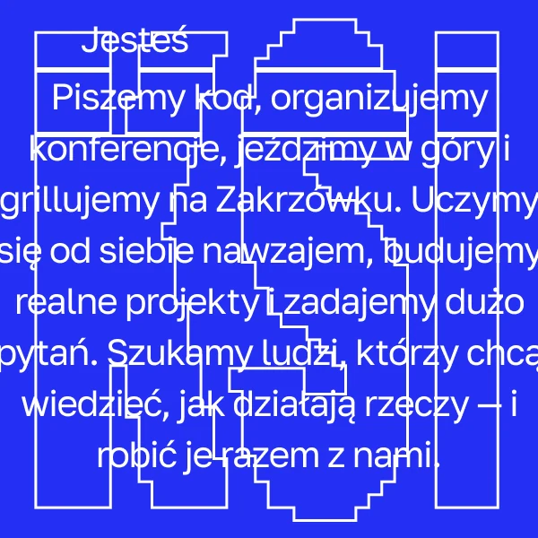

KSI
Posters between classes
What can a student read while passing a poster on the way to class?


- documents
- 26
- design artefacts
- 24
- coded fragments
- 72
- code assignments
- 140
A retrospective review of the finished design, coded in MAXQDA and ATLAS.ti. User interviews are planned and have not taken place yet.
Design choices to test
The colour and graphic idea may get someone to look. They still need to notice what the event is, when it happens and where to go. The circular lettering could help draw attention or compete with those details.
Start with a brief view of a Polish original and ask what the person remembers. Then let them look again and find the date, room and sign-up details. For the shirts, compare what KSI members and newcomers make of the symbols.
Where the codes fall
Every coded fragment in this project, grouped into the twelve code families of the review. One fragment can carry several codes.
Coded on the artefacts
Regions marked on the design files, as coded in the project. Numbers match the notes under each image.
123456- 1
White title top left on saturated blue.
Focal elementTypographic system
- 2
'On the programme': four topics in a small grid.
Text densityWayfinding cues
- 3
Spiral of the word 'model' around 'machine learning': the hook, and the largest element.
Recurring motifPlay & excitementCompeting attention
- 4
Dates '05.05 + 06.05' and 'Room 1164' in large type.
Numerals & dataWayfinding cues
- 5
QR code for sign-up.
Symbols & legendsStarting help
- 6
KSI mark in the corner, as on every poster.
Series consistencyCommunity codes
 78910
78910- 7
Hyphenated title broken across lines ('Medi-cine in gog-gles VR').
Focal elementTypographic systemPlay & excitement
- 8
Wireframe goggles drawn in thin lines.
Recurring motif
- 9
Blue starburst with date and day.
Accent colour as signalNumerals & data
- 10
Info grid: meeting number, time, language, room 1086.
Numerals & dataWayfinding cuesCommunity codes
 11121314
11121314- 11
Heavy black 'KSI Grill' on light green.
Focal elementTypographic system
- 12
Halftone ξ curling like smoke.
Recurring motifCommunity codes
- 13
Place and date bottom left.
Numerals & dataWayfinding cues
- 14
Vertical code-style tags '<Zakrzówek>', '<26_June>'.
Community codesAmbiguous reading

15- 15
'Piszemy kod, organizujemy konferencje, jeździmy w góry…': the community described by what it does.
Emotional statementCommunity codesMultilingual text
- ◻
One colour on cobalt; pixel outline frames the text.
Recurring motifColour system
From the case text
16 passages of the case study are coded. A selection:
“I create event posters, graphics and T-shirt prints for a community that meets around both technical interests and social activities.”
“The KSI mark was the only fixed identity element at the start.”
“The challenge was to give each event its own character while keeping the association visible.”
“I designed the posters for a busy university corridor, where someone might only glance at the wall while rushing from one class to the next.”
“I chose bright, contrasting colours and large type to help each poster stand out in that brief moment.”
“The hierarchy gives the event title a clear first read, followed by the details needed to take part.”
“The machine learning poster turns the word “model” into a spiral; the grill poster uses a halftone ξ.”
“a composition that catches attention on the way past and rewards a closer look”
“The concept and colour support a practical invitation: what is happening, when, where and how to take part.”
Related reading
- Wolfe & Horowitz · 2017 · Five factors that guide visual search ↗This review explains why bright colour is only part of getting noticed: what someone is looking for and the setting around the poster also matter.
- Reber, Schwarz & Winkielman · 2004 · Processing fluency and aesthetic pleasure ↗The repeated symbols raise a question about familiarity. Do members recognise them quickly, and what do they communicate to someone outside KSI?
The posters were published and the shirts were printed. That tells us the work was used, but not how well people remembered it or whether it changed attendance. A corridor test should record the viewing distance and lighting.
Interviews to run next
Who to speak to
Current students, including KSI members and non-members, with different familiarity with the events. Test Polish originals with Polish readers; English portfolio translations are a separate condition.
Questions for individual interviews · IDI
- Tell me about the last campus event you noticed on a poster.
- After this brief view, what do you remember and what are you unsure about?
- Where would you look for the time, location and sign-up route?
- What does this shirt suggest about the community, if anything?
Tasks to try
- View a Polish original at a recorded distance for three seconds, hide it, then describe the event without prompts.
- View it again at normal reading distance and locate date, room and sign-up route.
- Compare an original and a simplified hierarchy version in counterbalanced order.
Keep unaided recall separate from finding details on a second look. Record distance, lighting and exposure time. Three seconds is a proposed test condition, not a claim about everyone’s attention span.
Topics for a group discussion · FGI
Optional: two groups of 4–6 students, members and non-members separately. Discuss visual concepts and merchandise after private interpretations. Keep poster recall tests individual so one person’s answer does not cue the rest.
Download the interview guide and consent notes ↓
About this review
The review uses the full case-study text, the design files shown in the portfolio and the published research listed above. Each coded fragment keeps the observation separate from its interpretation. The notes describe the design and what to test next; they do not report how real users responded.